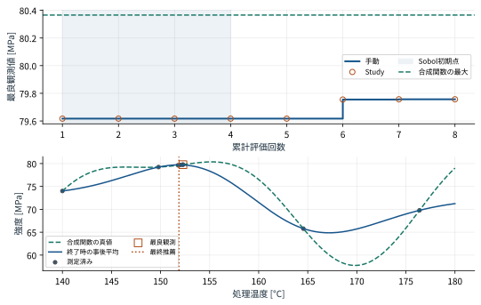

第6章 ベイズ最適化の実行
学習目標 手動とStudyで提案から測定・登録までを繰り返し、最良観測と最終推薦を区別する。
第5章では、現在のデータから次に測る点を一つ選びました。実際の最適化では、その点を測ってデータを更新し、残りの予算で同じ操作を繰り返します。この章では、測定の回数と試行の状態を管理しながら、最初の実験から最終推薦までを実行します。
6.1 初期実験計画と評価予算
仮想材料の強度を最大化します。第1章の合成関数を使い、今回は温度を 140〜180 °C の連続範囲から選べるとします。コードは正規化した \(x\in[0,1]\) を使い、測定のときに °C へ換算します。測定は決定論的です。GPは既定のモデルで観測分散を推定します。
評価予算は初期4回と追加4回の計8回です。最初の4点はSobol点列から選びます。Sobol点列は領域に点を広げることを狙った低食い違い点列です。ここではスクランブルを使い、シードを固定して再現できます。4点は \(2^2\) なので draw_base2(2) を使います (PyTorch Contributors 2025年; Garnett 2023年)。
第6章のNotebookで、初期点を作り、学習・提案・測定を1回行います。material_strength が実験を代替する関数です。実機では、この1行に相当する箇所で装置に条件を渡し、結果が返るのを待ちます。
import torch
from botorch.acquisition.analytic import LogExpectedImprovement
from robotorchan.models import SingleTaskGP
from robotorchan.optim import optimize_acqf
from torch.quasirandom import SobolEngine
from experiment import DTYPE, SEED, material_strength, setup
setup()
torch.set_default_dtype(DTYPE)
bounds = torch.tensor([[0.0], [1.0]])
solver = dict(num_restarts=6, raw_samples=64, options={"seed": SEED})
x_initial = SobolEngine(1, scramble=True, seed=SEED).draw_base2(2)
y_initial = material_strength(x_initial)初期の入力と観測値はそれぞれ \((4,1)\) です。bounds の1行目は下限、2行目は上限です。次のコードが返す suggestion は \((1,1)\) で、1候補・1変数を表します。
model = SingleTaskGP(x_initial, y_initial)
model.fit()
acquisition = LogExpectedImprovement(model, best_f=y_initial.max())
suggestion, _ = optimize_acqf(acquisition, bounds, q=1, **solver)
measured = material_strength(suggestion)
print(140 + 40 * suggestion.item(), measured.item())この実行の初期温度は 151.78、164.55、176.38、149.79 °C でした。最初の追加候補は 140.00 °C で、その1回の測定で 74.00 MPa を得ました。
raw_samples=64 と num_restarts=6 は候補を計算するソルバーの設定です。装置で試片を測るのは、採用した候補を評価する段階です。GPを学習するたびにも装置は使いません。第1章は合成試験が無雑音であることを利用し、計算用の小さい観測分散を固定しました。この章は手動とStudyの既定の回帰モデルを同じ条件で比べるため、両方で観測分散も学習します。合成データを生成する関数そのものはここでも決定論的です。
6.2 提案・測定・登録を繰り返す
観測済みデータを \(\mathcal D_n=((x_1,y_1),\ldots,(x_n,y_n))\) とします。候補を測れたら、\(\mathcal D_n\) の末尾に \((x_{n+1},y_{n+1})\) を追加して \(\mathcal D_{n+1}\) を作ります。配列の行を追加するため、同じ温度を再測定する場合も履歴を保持できます。更新後はモデルを作り直して学習し、獲得関数の基準値も更新します (Frazier 2018年; BoTorch Contributors, 日付なし)。
train_x = torch.cat((x_initial, suggestion))
train_y = torch.cat((y_initial, measured))
for _ in range(3): # 追加4回のうち1回は上で実行済み
gp = SingleTaskGP(train_x, train_y)
gp.fit()
value = LogExpectedImprovement(gp, best_f=train_y.max())
point, _ = optimize_acqf(value, bounds, q=1, **solver)
response = material_strength(point)
train_x = torch.cat((train_x, point))
train_y = torch.cat((train_y, response))以下の順でログを追うと、動作を切り分けやすくなります。
| 何を記録するか | 確認すること |
|---|---|
| 現在の入力と観測値 | 行数が一致し、目的値の単位がMPaで揃う |
| 提案した入力 | 温度範囲内にあり、実行する条件として渡せる |
| 測定結果 | 該当する提案に結び付き、欠測や失敗を識別できる |
| 累計の評価数と最良観測値 | 初期の測定もカウントし、現在の予算残を判断できる |
6.3 どの結果を最後に使うか
最大化で測定済みの最良観測値を \(b_n=\max_{i\le n}y_i\) とすると、新しい測定値を追加したときの更新は \(b_{n+1}=\max(b_n,y_{n+1})\) です。経過図で横軸を累計評価回数、縦軸を \(b_n\) とすれば、どの回で記録を更新したかが分かります。
一方、実験が終わったときに実運用へ渡す温度は、最終推薦として定義します。この例では最後の全データでGPを学習し、事後平均の最大点を推薦します。その温度でのモデルの平均値と、測定済みの最良観測値は、出どころが異なります。推薦を確認測定する場合は、予算に別の1回を加えます。

| 量 | 温度 [°C] | 値 [MPa] |
|---|---|---|
| 手動ループの最良観測 | 152.28 | 79.76 |
| 手動ループの終了時に作った推薦 | 151.88 | 79.71（事後平均） |
初期と追加を含め、手動もStudyも実測は 8回 です。Studyの最良観測値は 79.76 MPa でした。下段の推薦は最後のGPから計算した温度です。
連続温度範囲の合成関数の最大値は 80.37 MPa です。手動の最良観測値との差は 0.61 MPa、最終推薦を真の関数で評価した単純リグレットは 0.72 MPa です。第1章の最大値は1 °C刻みの候補、第6章は連続温度について求めています。
6.4 StudyでAsk-and-Tellを実行する
手動ループでは、配列の行と測定の順序を自分で管理しました。robotorchanの Study は試行（Trial）に番号・候補・状態・測定結果を紐付けます。ask() を呼ぶと候補が返り、その試行は RUNNING になります。tell() に実際の観測値を渡すと COMPLETE になります。次の提案には完了した観測が使われます (robotorchan contributors 2026年)。
from robotorchan.study import create_study
study = create_study(
search_space={"x": (0.0, 1.0)},
direction="maximize",
model=SingleTaskGP,
acquisition=LogExpectedImprovement,
n_initial_trials=4,
seed=SEED,
optimizer_kwargs=solver,
)acquisition=LogExpectedImprovement は手動版と揃えるために明示しました。本書が使用するrobotorchan 0.1.0では、Studyの獲得関数の既定値は qLogExpectedImprovement です。seed と候補最適化のオプションを揃え、初期設計を照合します。
for _ in range(8):
trial = study.ask()
x = torch.tensor([[trial.params["x"]]], dtype=DTYPE)
y = material_strength(x).item()
study.tell(trial, y)
print(study.best_params, study.best_value)trial.params["x"] は正規化温度です。実機で測るときには \(140+40x\) を °C の数値として渡します。提案を出した時点ではまだ測定値がないので、結果が返ってから tell() を呼びます。実機で再現するときは、試行番号・温度・結果・欠測理由を装置の記録と照合します。この小例の Study はメモリ上に状態を保持するため、プロセスをまたいで使う場合は運用側で試行ログを管理します。
6.5 停止条件と失敗の扱い
この章は8回で止めます。実験費用に上限がある場合は、次の試行に先立って残予算を確認します。他には、許容する強度に達した、確認測定を含む時間上限に達した、一定回数以上にわたり改善が小さい、といった停止条件があります。改善による停止は、測定のばらつきや未探索領域も考慮して決めます。小さな変化が続いたことだけで最適性を保証することはできません。
装置のタイムアウトは、試行を完了する値が得られなかった例です。外部実験なら tell(trial, state=TrialState.FAIL) とし、測定値を登録しません。目的関数をPythonから直接呼べる場合は study.optimize(objective, n_trials=4, catch=(TimeoutError,)) が逐次実行します。Notebookではタイムアウトを1回起こし、4試行のうち学習に使える観測が3件になることを確かめます。この例では失敗も実験枠を使うため、試行予算に含めます。装置停止を必要とするエラーは、継続を指定する例外と分けます。
6.6 章末演習とまとめ
- 確認。 初期4点と追加4点で、GPを学習し獲得関数を計算する操作は、何回の装置測定を追加しますか。最終推薦の確認測定も数えてください。
- 操作。 Notebookの失敗例で
fail_numberを0に変更し、状態の並びと学習に登録された件数を確認してください。 - 発展。 一定回数にわたり改善が小さいときに止める運用を設計してください。何回分の履歴を見るか、改善幅の単位、失敗試行の扱いを決めてください。
第7章では、同じ予算内でも、データの尺度・測定ノイズ・ソルバーの初期点が候補に与える影響を調べます。